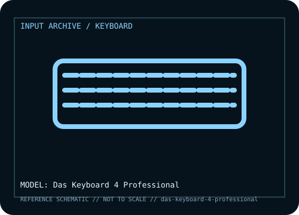

[ KEYBOARDS AND INTEGRATED POINTING DEVICES // IDENTIFIED COMPONENT ]
Das Keyboard 4 Professional
Full-size wired mechanical keyboard with Cherry MX2A switch options, a dedicated media strip, volume wheel, two-port USB 3.0 hub, and full N-key rollover.

MODEL IDENTIFICATION: Das Keyboard 4 Professional; ANSI/US and regional layout / switch variants. Verify the bottom label, regional SKU, receiver, and revision against the sources before repair or compatibility claims.
Model specifications
| Catalog subcategory | Keyboards and integrated pointing devices |
|---|---|
| Form factor / layout | Full-size 104-key ANSI/US layout in the US configuration; regional layouts and switch options vary by sold SKU. |
| Key mechanism / controls | Mechanical Cherry MX2A switches on current product listings; switch color / force behavior depends on the selected variant. The oversized rotary wheel and dedicated media keys are separate controls. |
| Wired protocol | Detachable? No: the keyboard uses a fixed wired USB connection. It sends standard USB keyboard input; its integrated two-port USB 3.0 hub is a separate downstream function and requires a suitable host connection. |
| Wireless protocol | None. This is a wired desktop keyboard; it has no Bluetooth radio or 2.4 GHz receiver. |
| Host compatibility | Standard USB keyboard input is broadly usable by USB-HID hosts, including Windows, macOS, and Linux. Media-key behavior and the USB hub depend on host support and port power; the advertised SuperSpeed hub requires a USB 3.x upstream connection. |
| Configuration / software | Typing does not require a vendor driver. Host-specific media-key mappings and hub behavior may vary; it has no wireless pairing, battery, or firmware configuration layer. |
| Revision / service caveat | Do not infer the installed switch from the family name alone: verify the carton or underside SKU. The 4 Professional is distinct from the 4C TKL and newer 4Q models. |
Preservation and service notes
Record the unit label, keyboard layout, switch option, cable or matched receiver, host OS, and test mode before troubleshooting. For wireless models, distinguish Bluetooth pairing from proprietary receiver operation; for wired models, verify that the USB connection carries data rather than power only.
Keep saved layouts and firmware with the exact model/revision. Disconnect power before switch or keycap service, use manufacturer-safe cleaning methods, and do not infer a unit’s configuration from a broad product-family name.
Manufacturer and independent references
- Das Keyboard — 4 Professional product specificationsPrimary manufacturer product reference for identifying this model and its stated feature set.
- Das Keyboard — 4 Professional user manualAdditional manufacturer documentation or independent model-specific testing; consult the revision/region applicable to the physical unit.
Product pages and support resources can change. Preserve the applicable manual or page revision when documenting a particular keyboard.